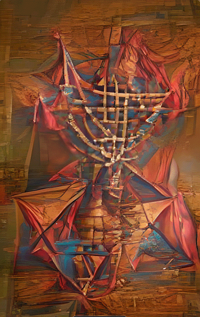
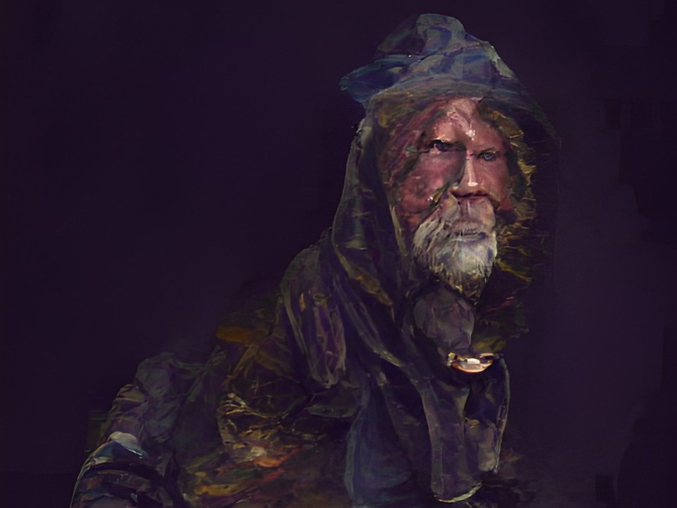
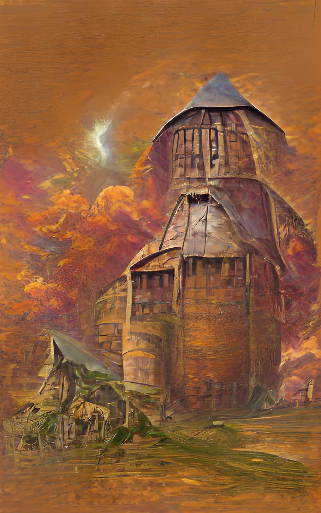
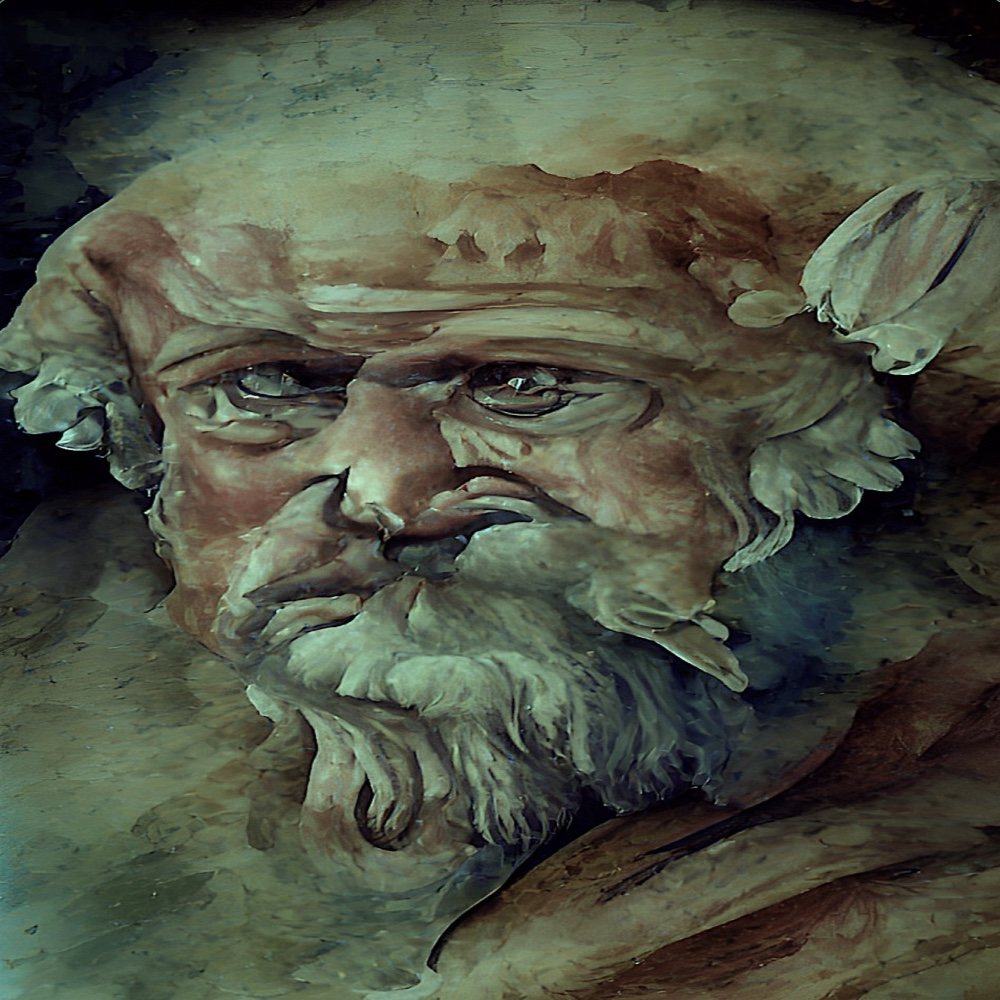
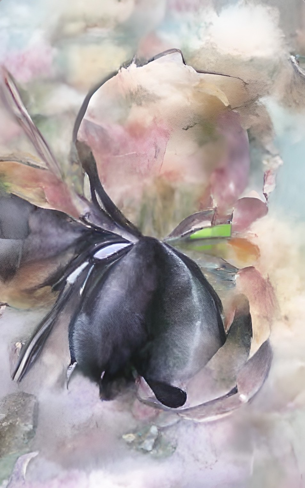
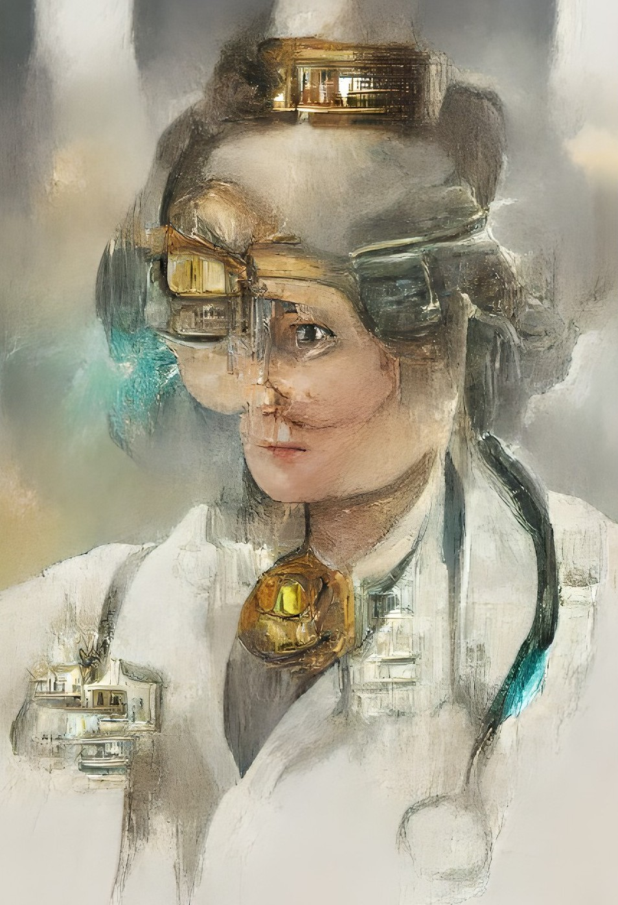
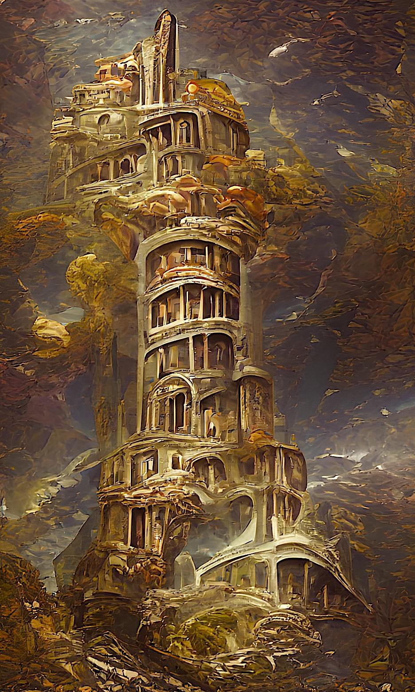

click this logo
Artificial Intelligence (AI) is a collection of algorithmic and mathematical systems using complex programming and the distributed
power of the Cloud to mimic human intelligence. There is nothing mystical about it. Web programmers have relied on it to build
digital art programs that (astonishingly) convert text to art, and I have used the program Wombo for just this purpose, with
a light reliance on one or two graphic programs to touch-up the art if necessary. It has been said that AI is already sentient
(i.e., has achieved human feelings or emotions), but that is nonsense. I don't know what the future will bring but right now it's
the human who's sientient, not the AI program.
This has been a labor of love. Each of these galleries or slideshows is more-or-less a work in progress. Please visit frequently to view changes,
deletions, and new art. I am having fun and maybe even creating digital fine art. This is a break-through technology, IMHO
Don Archer
Director
MOCA: Museum of Computer Art
Portraits and Places
|
Structures |
Cities and Scenes*
| |||||
Geometrics*
|
Nature Undone
|
Tantrums  | |||||
Political Faces
|
Homeless Portraits  |
Ruralesque
|
|||||
|
Towers and Torments*  |
Historical Faces  |
Landmarks
|
|||||
|
Fractal Art  |
Fabricated Portraits
|
All the Ships at Sea
|
|||||
Vestments
|
Doctors MD  |
Skyscrapers*  |
|||||
World Cities  
|
Machines of Good Hope
|
*Slideshows
Thank you and enjoy!